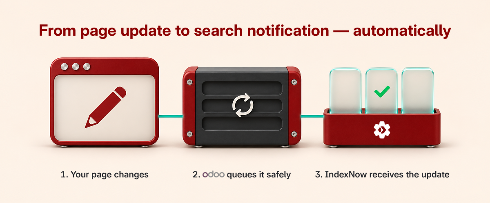
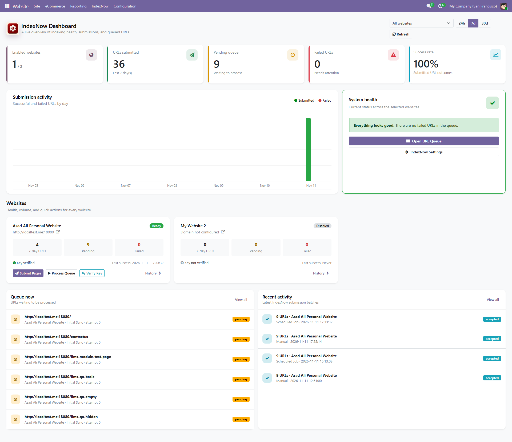
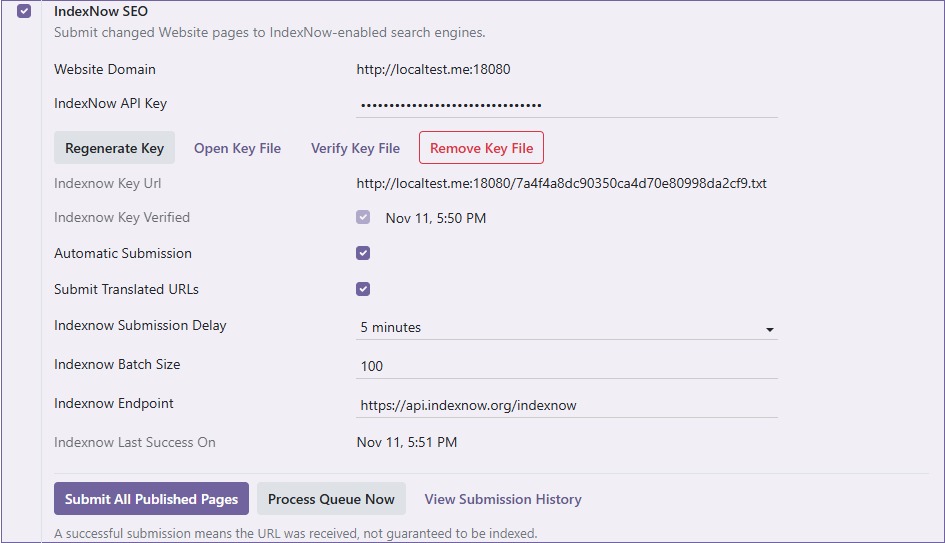
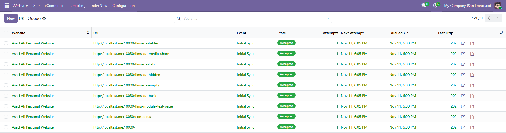
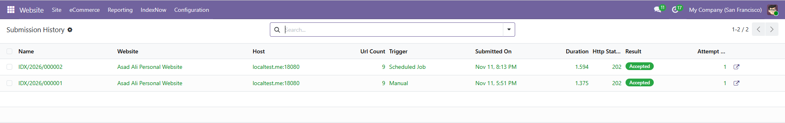

Keep search providers informed when your Odoo Website pages change. Canonical URLs are queued, deduplicated, and submitted in the background—without slowing down your editors.

External requests run in the background, while focused Odoo screens give administrators clear control over configuration, pending URLs, retries, and submission history.
Editors keep working while scheduled jobs submit eligible URL changes in safe batches.
Every website keeps its own domain, key, settings, queue, and submission history.
Temporary failures retry with backoff; configuration errors remain visible for correction.
A simple, auditable flow keeps page editing fast and URL delivery reliable.
Odoo detects a supported publish, content, URL, visibility, or deletion event.
The canonical URL is normalized, deduplicated, and prepared for background submission.
Odoo records the response, timing, URL count, and outcome for administrators.
Review key verification, pending work, failures, recent activity, and last success across all configured domains without searching through technical logs.
Compare enabled state, queue health, submission volume, and recent outcomes from one focused Odoo screen.

Every important action and outcome stays visible inside Odoo.

Manage the public domain, key verification, batching, language variants, and initial submission.

Review page URLs, change events, retry timing, website ownership, and processing state.

Inspect the host, trigger, URL count, duration, HTTP status, and provider outcome for every batch.
Queue supported publish, update, move, restriction, unpublish, de-index, and deletion events—automatically.
Retries are bounded, errors stay actionable, and records follow controlled retention rules.
website only; version 1 supports website.page